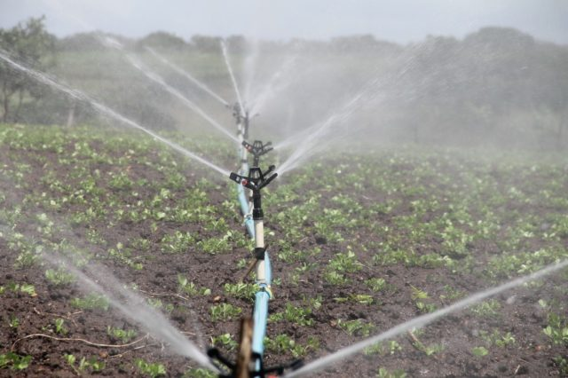

Sua nova fonte de informações sobre o mundo do Agronegócio!

Irrigação: PL pode isentar conta de luz de pequenos produtores
O Projeto de Lei 2044/20, do deputado Mário Negromonte Jr. (PP-BA), pode isentar os pequenos irrigantes e aquicultores do pagamento de energia elétrica para uso em atividades de irrigação por até seis meses, em razão do estado de calamidade pública decorrente da pandemia de Covid-19. A proposta tramita na Câmara dos Deputados. Pelo texto, o benefício será restrito às unidades cujo consumo com irrigação não ultrapasse 3 mil kWh/mês, a fim de assegurar sua destinação aos pequenos irrigantes.